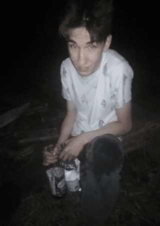

Marcin Niuchniewicz
Urodzony nie wiadomo gdzie i kiedy, wychowany na nowińskich blokach zabijaka, tak to właśnie on dziadek Marcina, tzw.
nowiński pierwszy nos czyli Marcin Niuchniewicz urodzony 1 grudnia 2002 roku w sklepie spożywczym groszek.
Skończył Szkołe Podstawową w Gronowie Górnym a pozniej gimnazjum w tym samym miejscu. Następnie uczęszczał do II liceum ogólnokształcącego
w Elblągu, a po jego ukończeniu wylosował gdzie będzie studiować. Marcin w młodości był bardzo miłym młodzieńcem, nie pił nie palił, jednak wszystko zmieniło
się w szkole średniej i na studiach. Aktualnie jest wielkim narkomanem i alkoholikiem.

Marcin chwilę po zwycięstwie w Mistrzostwach picia.
Osiągnięcia
- G4 po 1400 rozegranych grach niezły wynik.
- Mistrz chlania.
- Najlepszy piloński zawodnik piłki nożnej
- MVP sezonu B-klasy w drużynie Pogrom Aniołowo
Ważne wydarzenia
- Budowa igloo
- Niezliczone pilońskie grille.
- Sikanie na dachu
- Mistrzostwa picia wódki
- Nocna piesza wycieczka do Elbląga w ferie zimowe
Ciekawostki
- Alkohol i narkotyki zniszczyły jego kariere piłkarską.
- Umie świetnie obstawiać zakłady bukmacherskie.
- Jest wybitnym kierowcą.